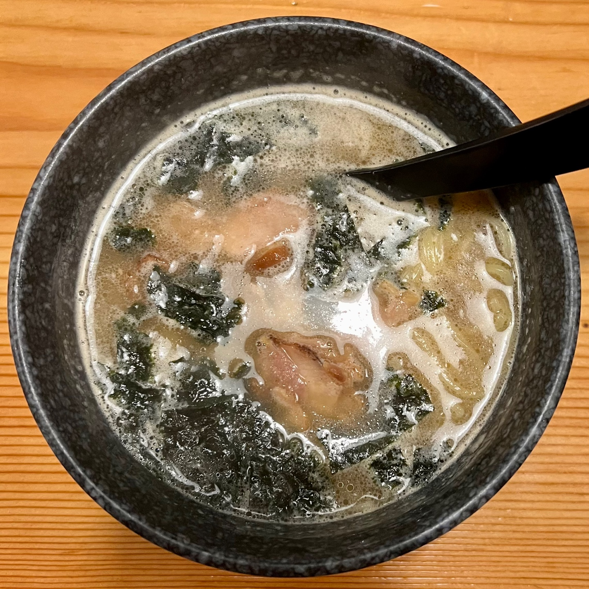

일본에서 지내면서 입이 행복한 시간이 정말 많았다.
일본의 디저트는 보는 눈 또한 즐겁도록
아름답게 디자인된 형태가 많았고,
대부분 가리는 음식 없이 다 잘 먹을 수 있었다.
한 가지 특징이 있다면,
일본 음식은 대체로 짠 맛이 강했어서
싱거운 음식을 즐겨드시는 어른들이라면
메뉴를 선정할 때
고민을 많이 해야겠다는 생각이 들었다.
또한 일본의 식당들은 테이블이 좁거나
일자형 형태가 많았기에
혼자 식사를 하는 분들이 대다수였어서
이 또한 신기했다.
개인적으로 가장 맛있었던 음식은 돈가스와 카레였다.
일본의 카레는 한국에 입국할 때
6~8인분짜리를 구매해오기도 했을 정도이다. 🤑
